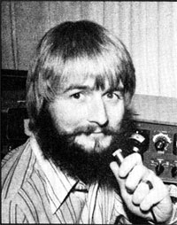
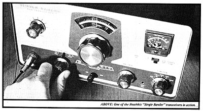
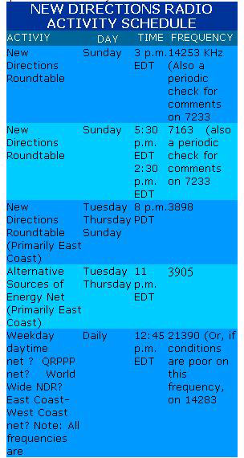
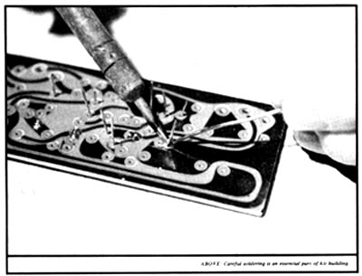
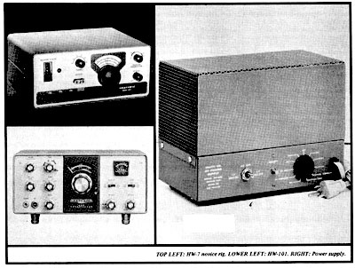

What's New !!!
The Sunday afternoon New Directions Roundtable sessions continue, but now start an hour earlier than indicated in MOTHER NO. 25 (for the new starting times, see chart that accompanies this article). Recent meetings of particular interest have included one in which Jim Stamper discussed his project to help poor people of southern Virginia through this winter's energy crunch and another in which North Country Anvil's Jack Miller returned for a talk about the media. Other highlights of the late winter: a women's session; Wes Thomas (W21KQ), editor of Synergy Access, talking about networking; and raps on organic gardening. Randy Brink (WA7BKR) and Bob Hickerson (WA6RRR)-two fellows who've been communicating seriously via ham radio for some time now recently started a West Coast section of the Roundtable which meets Tuesday, Thursday and Sunday nights at 8 p.m. PDT on 3898 kHz. Randy and Bob are very stimulating people-into doing, not just talking-and we're fortunate that they've made this considerable commitment of time and energy.
A group of us who are interested in alternative sources of energy started an ASE Net in late January. Sessions begin at 11 p.m. EDT on 3905 kHz. Although primary coverage is the eastern half of the U.S., the actual range depends on current propagation conditions so don't hesitate to give these meetings a try even if you live in the West. Among the letters we've received recently was one from Godfrey Boyle (G30WC), who edits Undercurrents, a London-based alternative technology magazine. He wrote, "I've often been mind boggled by the fantastic possibilities of a planet-wide network of relatively self-sufficient alternative technology-type communities, linked to one another by low-cost, low-energy shortwave radio. The synergy a system like that could create would be tremendous!" Godfrey has no equipment at the moment having gotten "bored with inane discussions about frequencies, DX, transmitters, etc. (ZZZZZZ Z!)"but we hope he'll be back on the air soon. Getting these international and intercontinental links forged is one reason for the daily monitoring of 21.390 in the 15-meter amateur band. (See the schedule for a summary of all current on-the-air activities at the time late January-this was written.)
Jim Stamper just passed his General and Advanced tests in Washington, D.C. and has a few comments on the current procedure. "Have Form 610 filled out in advance," he says, "arrive early and bring exactly $9.00 the FCC staff doesn't make change." The test Jim took was given in an office-with all the usual distractions and he suggests that you be able to copy solidly the 15 wpm transmissions from W1AW to counteract the anxiety of the scene. You're no longer allowed (as I was) to go back and fill in blank spaces at the end of the code test. There were no "trick" questions on the General Class theory exam, and Jim thinks that portion of the test should present no problems if you can handle the questions in the License Manual.
In a recent letter, Roger Jacobsen (a former ham who's getting involved again) ventured a guess that some people will be turned off by trying to communicate through the periods of interference common on the long distance"HF" bands. Also, Roger himself is bothered by the distortion of natural voice quality which commonly occurs in Roundtable operation when all SSB signals are not tuned exactly right.
Although hams put up with these drawbacks as part of the game, Roger is afraid that many newcomers won't. Accordingly, he's seeking to join others in developing some local and regional New Directions activities on the shorter distance VHF and UHF frequencies where limited range is compensated for by greater freedom from interference and more natural sounding voices. (Roger's address is 1660 Green Bay Road, Highland Park, Illinois 60035.)
It's a big task to explore the communication reliability problem thoroughly, so I'll just make a few general comments here. Convinced ham that I am, I have to admit that the U.S. telephone service-with all its faults-is nevertheless a pretty tough act to follow from the standpoint of consistent, interference free service. Just as we have become used to packaged food and fast transportation on demand, we've also come to expect instant, high reliability communication. (The current system's stability is, of course, somewhat tenuous because it depends on a healthy industrial economy the maintenance of which is out of the user's control.) Those who grow their own food and walk or ride bicycles have opted for a measure of personal independence in these areas of their lives. The same can be said of those who've picked up amateur radio as a serious communication tool. The successful ham -like the successful gardener-learns to work with the rhythms and laws of nature. And his endeavor is rewarded with a similar kind of satisfaction because there's enough randomness and possibility of failure in both activities to make each an adventure. (That's more than you can say for taking a TV dinner from the freezer or dialing a telephone number.)
In short, those who expect ham radio to be another Ma Bell will be disappointed. Others, however those who can muster a bit of wonder that signals from a rig they put together themselves can travel with the speed of light to another human a thousand miles away won't be put off by the technical problems. The only way to decide whether ham radio is for you is to spend a few hours actually trying it. That's another good reason why you should track down a ham-or ham club-in your area.
Once you've decided to obtain your license and get into the long distance shortwave end of ham radio, you'll eventually face the problem of outfitting yourself to transmit and receive. In years past, most hams used separate instruments for these purposes. The current trend-and the lowest-cost approach-is to a single "transceiver" that combines both functions. Such a unit permits single sideband voice and Morse code transmission, including reduced power code operation for Novice use. It can also be used (usually at reduced power levels) with slow scan TV and radio teletype attachments. Their variable frequency oscillators allow you to transmit on any specific frequency within a given band. You can acquire a transceiver by three basic routes and the first possibility-of course-is the purchase of commercially built equipment from a dealer or directly from a manufacturer. This requires the greatest cash outlay and is devoid of any pride of construction, but also involves the minimum technical hassle . especially since any item that doesn't work when you get it is repaired by the seller under a warranty. At the other extreme, you can gather up individual parts and build a transceiver from scratch according to information in a magazine article or from The Radio Amateur's Handbook. I recommend this approach only for those with enough background in electronics to feel fairly confident of success. You need to know enough to trouble-shoot the gear, and you must also have the appropriate tools (including those required to cut holes in a metal chassis). Other negatives include the high cost of components when bought in small quantities and the very low resale value of home-brew equipment.
|
 |
 |
 |
|
 |
 |
|